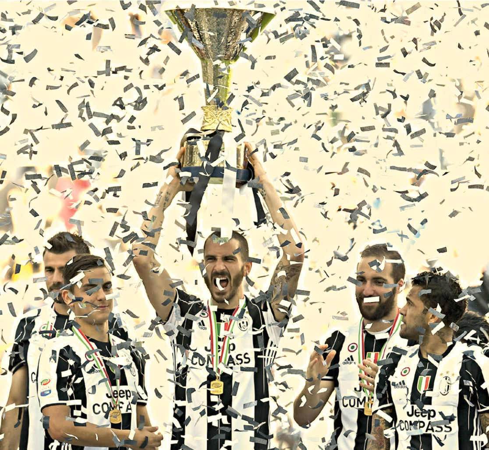

НАКОРОТКЕ 
ОЛЕ, «ЮВЕ!»
«Ювентус» со счетом 3:0 обыграл «Кротоне» и в шестой раз подряд стал чемпионом Италии.
В этом сезоне «Старая синьора» стала нам чуточку ближе, даже для тех, кто никогда за нее не болел – миллионы болельщиков «Спарта- ка» породнились с ней через Масси- мо Карреру. Он пять лет играл за чер- но-белых, потом еще пять лет рабо- тал там тренером. Объясняя неявку на пресс- конференцию после матча против «Томи», Каррера в шутку сказал: «Я не был доволен игрой? Нет, просто был очень голоден, к тому же торо- пился домой смотреть дерби «Ювен- тус» – «Торино». Но в каждой шутке доля правды – итальянец не мог быть довольным блеклой победой над то- мичами, потому что воспитан в по- бедных традициях «Ювентуса». Клуба, в котором он многое взял у тренера Антонио Конте. Тот, кстати, тоже стал чемпионом – в Англии, с «Челси». Другая легенда «Ювентуса», Зи- недин Зидан, выиграл с «Реалом» чемпионат Испании. В европейском клубном сезоне остался лишь один вопрос: кто выиграет Лигу чемпио- нов – «Реал» Зидана или «Ювентус» Массимилиано Аллегри? Как бы ни закончился финал, в цветах победителя будут черно- белые…
Серию А «Ювентус»
выиграл, но глав-
ная цель, победав Лиге чемпионов,
впереди. ФОТО
GETTYIMAGES.RU
3
запасных
БЫЛО У «ТОМИ» В МАТЧЕ
ПОСЛЕДНЕГО ТУРА
ПРОТИВ «КРАСНОДАРА»
проигранном 1:5.
Это вратарь Алексей
Солосин, защитник
Дмитрий Осипов
и полузащитник
Андрей Зорин
ЗДЕСЬ ВСЕГДА БУДЕТ ЛОВЧЕВ
«РОСТОВ» УСТАЛ ЖДАТЬ И ВЕРИТЬ
У нас в стране нет команды, ко- торая на голову сильнее осталь- ных. Тот же успех «Спартака» – это эмоции, настрой. Как только он пропадает, силы соперни- ков выравниваются. У «Ростова» в заключительном туре был при- личный оппонент. «Оренбург» уже в своем первом «элитном» сезоне обрел очертания неу- ступчивой команды с очень ин- тересным тренером Робертом Евдокимовым.
Но главное здесь – не «Орен- бург» как таковой. Ему кровь из носу надо было побеждать, то есть атаковать. Дело в самом «Ростове». Дончане играли при полнейшем накале с «Бавари- ей», «Атлетико», «Манчестером», но постоянно мучились с во- просом финансовой поддержки клуба.
Это напоминает притчу про мальчика-пастушка и вол- ков. Два раза он кричал в шут- ку: «Волки! Волки!» Потом те и правда пришли, но никто уже не поверил, и овцы были растер- заны. Когда постоянно думаешь о помощи, слышишь фразы «на- до», «мужики», в итоге наступа- ет сбой.
«Ростову» надоело ждать и ве- рить. Там воюют за деньги, а не за творчество. Как следствие – лишь шестое место.
Сейчас все прекрасно все по- нимают: Бердыев в такой обста- новке не останется. В конце кон- цов, он много лет работал в Ка- зани, где с поддержкой не воз- никало проблем. А здесь – все сам. Наверняка у тренера есть предложения. Да и многие игро- ки уже не ассоциируют себя с клубом.